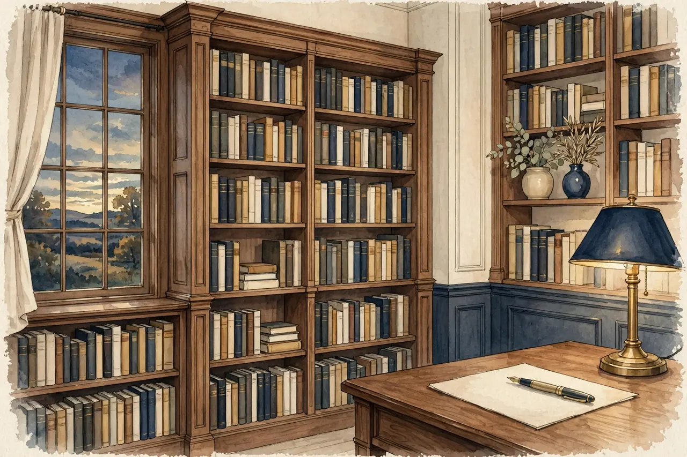

What a crossword trial can tell us
A crossword offers a particular pleasure: the clue does not quite fit, another letter appears, and suddenly the word makes sense. You do not need to call that experience medicine to value it. But when a crossword study makes news, the details are worth reading.
One comparison, one clinical population
In the COG-IT trial, 107 adults with mild cognitive impairment were assigned to web-based crosswords or computerized cognitive games. They completed an intensive twelve-week programme followed by booster sessions, with the primary comparison at 78 weeks. These participants were not a sample of healthy casual players. [1]
Crosswords did better than the comparison games on the primary cognitive measure at 78 weeks. A measure of reported daily functioning also favored crosswords, while the neuropsychological composite and a performance-based functional measure did not differ. MRI results favored crosswords on some measures, but these were exploratory findings, and secondary comparisons were not adjusted for multiple testing. [1]
The trial had no inactive control group. It therefore cannot show that either activity was better than ordinary life without the programme. It also does not establish that every crossword is better than every game, or that a BrainPlay crossword prevents dementia. The authors called for further study.
Play for the clue, not the promise
If word puzzles appeal to you, start with a manageable grid. Use a hint, reveal a letter or leave a clue and return later. A comfortable puzzle should explain what a reveal does and let you finish without a speed requirement.
A useful game result says which grid you completed and which clues used help. It should not convert those choices into a brain-age score or a diagnosis. Difficulty should describe the puzzle, not judge the player.
The bottom line: A carefully studied crossword programme produced an interesting result against particular games in people with mild cognitive impairment. That is a reason for accurate reporting, not a health promise for a different product.
Sources
- Devanand DP et al. Computerized Games versus Crosswords Training in Mild Cognitive Impairment. NEJM Evidence, 2022;1(12). DOI 10.1056/EVIDoa2200121. Full paper checked. https://pmc.ncbi.nlm.nih.gov/articles/PMC10457124/
← Back to the games · All articles · About · Privacy policy · Photo credits · Cookie settings